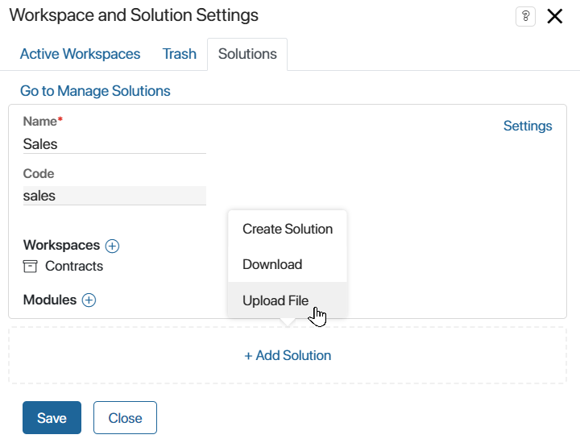
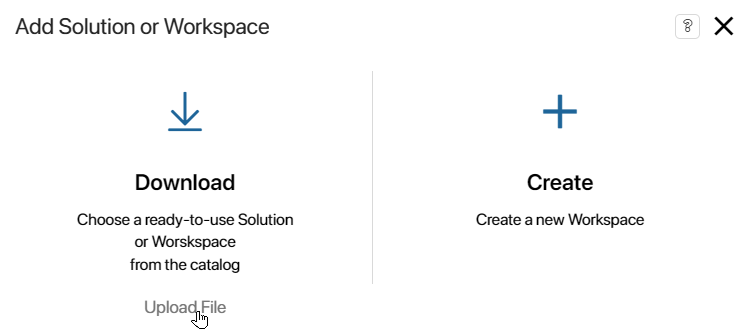
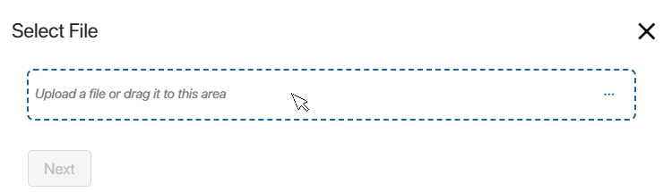
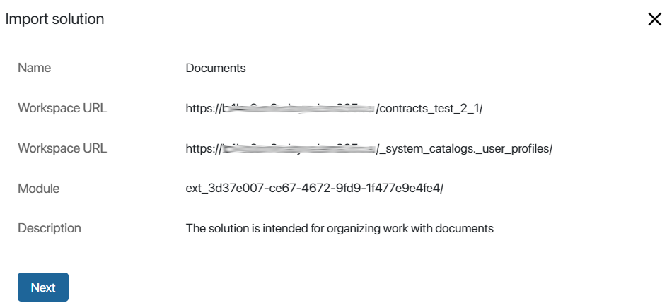
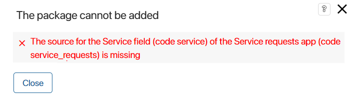
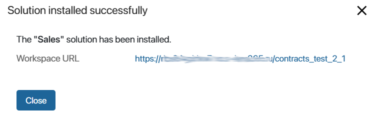

When you import a ready-made solution from an .e365 file, you add all of its components to the system: modules, workspaces, apps, pages, custom widgets, separators, links, business processes, scripts, etc. If the solution contains modified system workspaces, similar workspaces and their components, such as apps and business processes, will be updated in your company after installation.
To import the solution:
- Proceed in a way that is convenient for you:
- On any page of the system, click the icon in the left menu, and in the opened window, click Solutions. Then click +Add Solution and select Upload File.

- On any page at the bottom of the menu, click the
 icon. In the opened Add Solution or Workspace window, select Upload File.
icon. In the opened Add Solution or Workspace window, select Upload File.

- In Administration > Solutions, click +Solution and in the opened window, select Upload File.
- Select the .e365 file from your local computer or from your system files and click Next.

If the solution was installed earlier, you can proceed to update it. To do this, click Continue in the opened window.
Important: if you upload a solution that was created or modified in a newer version of the system (for example, 2024.4) than your current version (for example, 2024.1), a warning message appears. The import may fail or the solution may not work properly because the newer version may have changes that are incompatible with yours. Select to cancel or continue the import process.
- In the opened window you can see the links to the imported workspaces and their apps, as well as a description of the solution. Click Next to continue the installation.

The imported solution will be checked for errors in each of its components. The structures of custom groups and fields are checked, as well as links in fields of the App type to workspaces and apps added to the solution, the presence of duplicate pages is detected, etc.
If an error is found as a result of the check, you will see a notification. The solution cannot be imported into the company.

A system workspace with all its components may be added to the solution you’re installing. If the company already has a solution that includes the same workspace as a whole, an error will occur during import. This prevents duplication of components in the system.
To complete the import of the new solution, cancel the option to add the entire conflicting workspace to the company’s existing solution. To do this, go to Administration > Solutions, open the solution page with the used workspace, and uncheck the Add the entire workspace to the solution option. Import the new solution again.
In addition, the imported solution is checked for:
- Dependencies installed during export, which are set by the developer at the export stage. If dependent solutions are absent in the system, import is impossible.
- Optional dependencies on certain workspaces or custom modules. In this case, the solution can be imported, but the functionality of these components will be limited. The developer can ensure the correct operation of the solution by adding the required modules and workspaces to it.
- Variables inconsistencies in document templates. In this case, the solution can also be imported.
In all of the above cases, you will see a corresponding warning message.
- If the solution is installed successfully, click Close.

The components included in the solution will be added to the company. The modules will be displayed in Administration > Modules, the workspaces will be available in the left menu. At the same time, system workspaces will be updated, for example, additional properties will be added to the app context, and new versions will be created for forms, widgets, and business processes.
The solution and its components are locked during import. This means that users will be able to work with them but will not be able to edit them.
To edit components, you need to unlock the solution. You can then delete and edit components. You can also restore previously customized or original versions of forms and widgets, as well as business processes.